Stellen Sie Ihre Auswahl zusammen
Tippen Sie auf „Mehr lesen“ für zusätzliche Hintergründe. Es gibt keine festen Pakete, keine Bewertungen und keine Eile.

Coloured Canyon
Der Coloured Canyon liegt auf der ägyptischen Sinai-Halbinsel bei Nuweiba. Er ist eine schmale Sandsteinschlucht, geformt durch uralte Wassererosion und bekannt für geschichtete Mineralablagerungen in vielen Farbtönen.
Die gestreiften Wände des Canyons sind über Millionen von Jahren entstanden und zeigen Bänder aus Eisen, Mangan und Sandstein in gedämpften Rot-, Violett- und Ockertönen. Die gewundenen Gänge werden unvorhersehbar enger und weiter, sodass sich Enge und Weite abwechseln und man sich in der sonst kargen Landschaft der Dimensionen und der geologischen Zeit stärker bewusst wird.
Eine geführte Wanderung durch den Canyon dauert etwa 2 Stunden, über unebenes Gelände mit gelegentlich leichtem Kraxeln.

Wadi Weshwashy
Das Wadi Weshwashy ist ein schmaler Wüstencanyon auf der ägyptischen Sinai-Halbinsel bei Nuweiba, bekannt für seine versteckten Süßwasserbecken zwischen geformten Sandsteinfelsen.
Über Jahrtausende von saisonalen Sturzfluten in Sedimentgestein geschnitten, endet das Wadi in einer Reihe natürlicher Becken, die von Regen- und Sickerwasser gespeist werden. Man erreicht es über eine allmähliche Wanderung durch offene Wüste; der Übergang von der offenen Ebene in den engen Canyon verändert spürbar Maßstab und Klang, und Stille und Echo ersetzen die gewaltige Ruhe der umgebenden Landschaft.
Erreichbar über eine 45–60-minütige geführte Wüstenwanderung von der nächsten Piste. Mit Geländewagen oder Kamel erreichbar.

Hidden Canyons
Ein schmaler Sandsteincanyon bei Taba im Osten Ägyptens, bekannt als Hidden Canyon, mit gut erhaltenen Inschriften aus osmanischer Zeit in den Felswänden.
Der Canyon liegt in den Bergen westlich von Taba auf der Sinai-Halbinsel und besteht aus geschichtetem Sandstein, geformt von Wind und saisonalem Wasser. Zwischen den natürlichen Streifen finden sich arabische Inschriften aus osmanischer Zeit, die wahrscheinlich auf Verwaltungspräsenz oder durchziehende Reisende hinweisen. Der enge Durchgang, das gefilterte Licht und die verwitterte Schrift sorgen für eine stille Begegnung mit geologischer und historischer Zeit.
Etwa 30–45 Minuten zu Fuß; am schönsten am frühen Morgen, wenn es kühler und das Licht weicher ist.

Wadi El Malha
Das Wadi El Malha ist ein von Salzkrusten gesäumtes Wüstental im Südsinai, Ägypten, östlich des Sinai-Hochlands gelegen und geprägt von Mineralablagerungen, Felsformationen und saisonalen Wasserläufen.
Der Name des Wadis bedeutet „Salztal“ und verweist auf die hellen Mineralkrusten, die durch Verdunstung in dieser trockenen, von tektonischer Hebung und Erosion geformten Landschaft entstanden sind. Das weite, offene Becken und die gedämpften Farben vermitteln ein starkes Gefühl für Weite, in der Stille und Ausgesetztheit einem die geologische Zeit und die eigene Kleinheit bewusst machen.
Mit Geländewagen oder Kamel erreichbar, mit kurzen Erkundungsgängen über unebenes Gelände.
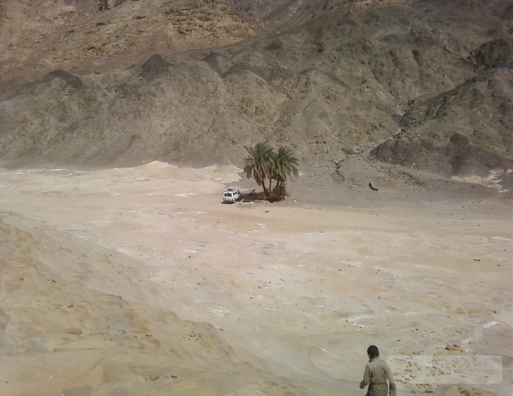
Bir El Berea
Bir el Berea ist ein abgelegener Wüstenbrunnen und Lagerplatz auf der ägyptischen Sinai-Halbinsel, in einer Landschaft aus Sandsteinplateaus und Kiesebenen, geformt von Wind und Zeit.
Bir el Berea liegt im zentralen Sinai und war früher eine bescheidene Wasserquelle für Beduinengemeinschaften und Reisende auf den Routen durch das Innere der Halbinsel. Das umgebende Gelände, trocken, weit und kaum bewohnt, vermittelt ein starkes Gefühl für Entfernung und Stille, in der die geologische Zeit präsenter wirkt als menschliche Bewegung.
Am besten zwischen Oktober und April, wenn die Tagestemperaturen gemäßigt und die Zufahrten besser befahrbar sind.

Rainbow Canyon
Der Rainbow Canyon ist eine Sandsteinschlucht auf der ägyptischen Sinai-Halbinsel, bekannt für natürlich gebänderte Felsformationen, entstanden durch tektonische Hebung und lange Erosion.
Im trockenen Inneren des Südsinai gelegen, zeigen die geschichteten Wände des Canyons Mineralfärbungen in gedämpften Rot-, Ocker- und Violetttönen, Spuren geologischer Prozesse über Millionen von Jahren. Die engen Gänge und das gefilterte Licht schaffen eine gedämpfte Atmosphäre, in der Geräusche leise getragen werden und man sich der Dimensionen und der im Stein gespeicherten Zeit bewusst wird.
Übliche Wanderroute: etwa 1–2 Stunden über unebenes, felsiges Gelände.

Bir El Sorah
Bir el Sorah ist ein abgelegener Wüstenbrunnen im Wadi Watir im Südsinai, Ägypten, der früher als Wasserquelle an Beduinenrouten durch das Landesinnere diente.
In den weiten Kiesebenen des Wadi Watir gelegen, gehört Bir el Sorah zu einem Netz von Brunnen, die einst Hirtenwanderungen und kleine Siedlungen in einer sonst trockenen Landschaft ermöglichten. Der Brunnen ist eine stille Unterbrechung im weiten Gelände, wo Stille und Offenheit zum Nachdenken über Ausdauer, Knappheit und den gemessenen Rhythmus des Wüstenlebens einladen.
Mit Geländewagen erreichbar; etwa 60 km nordwestlich von Nuweiba im Südsinai.

Ain Fortaga
Ain Fortaga ist eine natürliche Quelle im südlichen Sinai, eine seltene Süßwasserquelle in der trockenen Wüstenlandschaft des ägyptischen Berglands.
Die Quelle entspringt aus schroffen Sandsteinklippen und versorgte seit jeher Beduinengemeinschaften und Tiere. Ihr ruhiges Fließen steht in starkem Kontrast zur Härte der umgebenden Wüste und schenkt einen Moment stiller Besinnung und Verbundenheit mit den beständigen Rhythmen dieser Landschaft.
Über einen 30-minütigen Fußweg von der nächsten Wüstenpiste erreichbar, für kurze Erkundungsgänge.

Ain Um Ahmed
Ain Um Ahmed ist eine natürliche Quelle im südlichen Sinai, eine seltene Süßwasserquelle in der trockenen Wüstenlandschaft der Region.
Die Quelle versorgte seit jeher nomadische Beduinengemeinschaften und Tiere und bildet eine kleine, fruchtbare Enklave in sonst rauem Gelände. Ihr stilles Wasser spiegelt die weite, schweigende Umgebung und weckt ein Gefühl zeitloser Abgeschiedenheit und leiser Beständigkeit.
Mit Geländewagen von der nächsten Wüstenpiste erreichbar.

Wadi Gazhalla
Das Wadi Gazhalla ist ein Wüstental auf der Sinai-Halbinsel, bekannt für sein felsiges Gelände und saisonale Wasserläufe. Der Überlieferung nach ist es nach dem Ort benannt, an dem ein Einheimischer eine tote Gazelle fand und ihr Junges rettete.
Der Name „Gazhalla“ geht auf diese Geschichte zurück und bedeutet „Ort der Gazelle“, eine stille menschliche Verbindung zur Landschaft. Die schroffen Felsformationen und der unberührte Sand wecken ein Gefühl von Stille und Zeitlosigkeit, in dem man spürt, wie Natur und Erinnerung über Generationen langsam geformt wurden.
Das Wadi wird meist mit dem Fahrzeug durchquert, nicht zu Fuß, was eine malerische Fahrt durch die schmalen Wüstengänge ergibt.
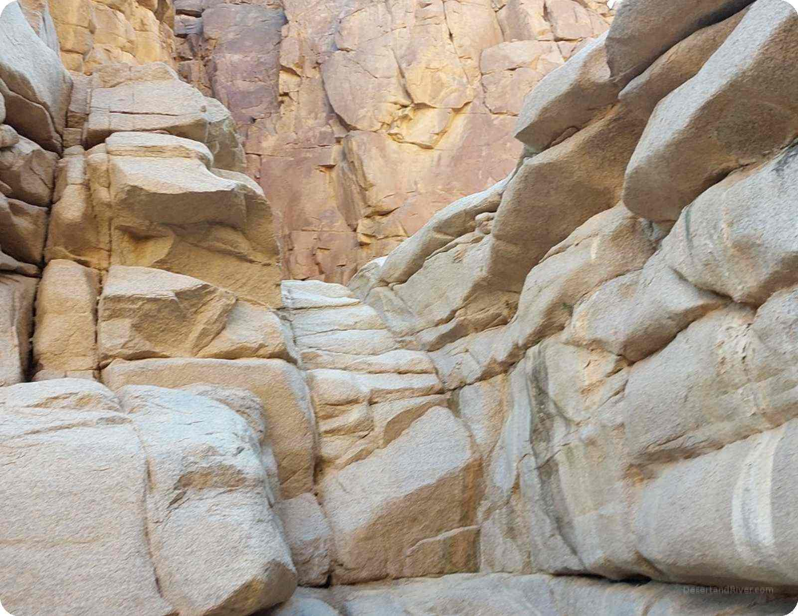
Wadi El Rum
Das Wadi El Rum ist ein abgelegenes Tal im südlichen Sinai, das sich durch raues Wüstengelände mit Felsklippen, saisonalen Wasserläufen und spärlicher Vegetation zieht.
Das Wadi gehört zu einem Netz von Tälern, die über Jahrtausende durch Erosion entstanden sind, mit geschichteten Felsformationen und vereinzelten archäologischen Spuren beduinischer Besiedlung. Seine Weite weckt eine tiefe Stille, in der die Dimensionen der Landschaft zum Nachdenken über Zeit und Ausdauer einladen.
Eine mittelschwere Wanderung von 1 Stunde, mit Geländewagen erreichbar

Salama Canyon (Small Coloured Canyon)
Der Salama Canyon ist ein breiter, bunter Sandsteincanyon im südlichen Sinai, eine kompakte geologische Formation, die über Jahrtausende durch Erosion entstanden ist.
Der Canyon zeigt Schichten aus rotem, ockerfarbenem und cremefarbenem Gestein, die die komplexe Sedimentgeschichte der Region und feine Mineralunterschiede offenbaren. Beim Gehen durch die gewundenen Gänge spürt man eine stille Verdichtung von Raum und Zeit, in der Sonne und Schatten die intime Größe der natürlichen Wände betonen.
Etwa 30 Minuten zum Durchqueren; am schönsten am kühleren Morgen oder späten Nachmittag.
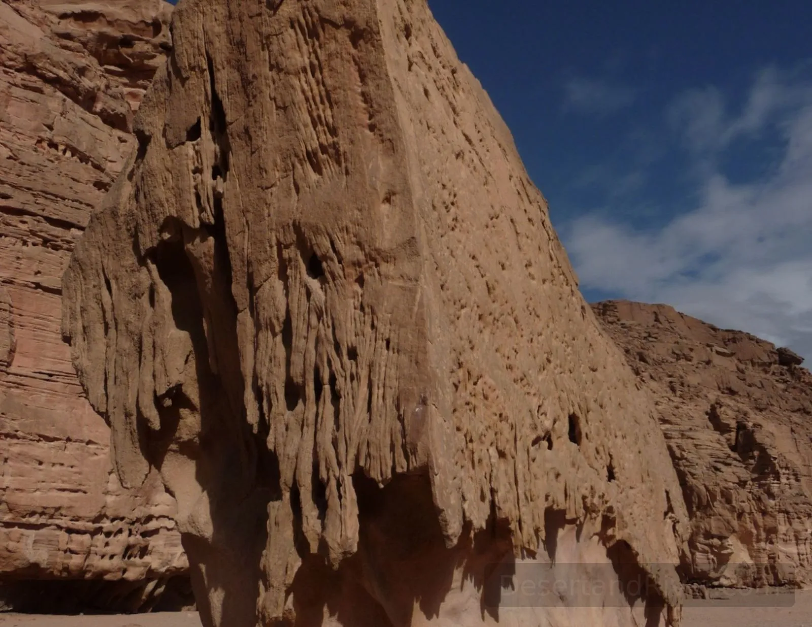
Wadi El Disco
Das Wadi el Disco ist ein weites, offenes Tal im südlichen Sinai, bekannt für eine hoch aufragende Felswand und eine natürliche Akustik, die eindrucksvolle Echos über den Wüstenboden wirft.
Das weitläufige Gelände eignet sich zum Durchqueren und für Übernachtungen und vermittelt eine Weite, die im Sinai ungewöhnlich ist. Die steile Klippe und die hallenden Echos wecken ein stilles Bewusstsein für Größe und die beständige Präsenz der Wüste, in der Klang und Raum über die Zeit hinweg zusammenspielen.
Mit dem Fahrzeug erreichbar; Übernachten unter klarem Wüstenhimmel ist möglich.

Oase Melahith
Dieser abgelegene Ort im Sinai, Ägypten, vereint ein Wadi, einen Canyon, eine Oase mit vier kleinen Tränken für Tiere und den Berg Melahith zu einer vielfältigen Naturlandschaft, die über Jahrtausende von Wasser und Wind geformt wurde.
Das Gebiet zeigt eindrucksvolle geologische Kontraste: Breite Canyonwände öffnen sich zu einer Oase mit Felsformationen, wo vier kleine Teiche Wasser für Tiere und Pflanzen wie Palmen, Akazien & Kapernsträucher bieten, bevor das Gelände in raues Bergland übergeht.
Höhe zwischen 450 und 850 Metern; mittelschwere Wanderung empfohlen.

Nagb El Hemedat
Nagb el Hemedat ist ein schmaler Bergpass auf der Sinai-Halbinsel in etwa 650 m Höhe, der das Wadi Gazallah mit dem Closed Canyon verbindet und Inschriften aus der Kreuzfahrerzeit aufweist.
Der Pfad steigt über schroffe Sandsteinkämme und bietet weite Ausblicke über die umliegenden Täler und fernen Berge. In den Fels geritzte Kreuzfahrerinschriften schaffen eine greifbare Verbindung zu mittelalterlichen Reisenden, während die stille Weite und der erhöhte Aussichtspunkt ein nachdenkliches Gefühl für Größe und Einsamkeit wecken.
Etwa 1 Stunde zu Fuß; mittelschweres Gelände; Höhe ~650 m.

Closed Canyon
Ein schmaler, gewundener Canyon nahe der Oase Ain Khudra auf der Sinai-Halbinsel, mit engen Passagen, die man vorsichtig zu Fuß durchquert.
Die Wände steigen steil an und erzeugen beim Durchqueren der Enge einen eindrucksvollen Kontrast zwischen Sonne und Schatten. Stellenweise ist der Canyon so schmal, dass man seitlich gehen muss, was eine seltene Nähe zum Gestein und ein nachdenkliches Bewusstsein für Raum schafft.
Gehzeit: etwa 30 Minuten pro Richtung; sehr enge Passagen.

Mushroom Stone
Der Mushroom Stone ist eine natürlich erodierte Sandsteinformation in der Wüste des Südsinai, Ägypten, vom Wind zu einem schmalen Stiel mit breitem, hutartigem Kopf geschliffen.
Die Formation liegt an Wüstenpisten zwischen dem Wadi Gazallah und Ain Khudra und ist das Ergebnis langer Winderosion an geschichtetem Sandstein. Ihre markanten Proportionen zeigen die allmähliche Kraft des Windes an weicherem Gestein und schaffen eine Form, die unwahrscheinlich ausbalanciert wirkt und zum Nachdenken über geologische Zeit und die stille Beharrlichkeit der Natur einlädt.
Mit Geländewagen erreichbar, mit kurzem Fußweg über flaches Wüstengelände.

Nagb Khudra
Nagb Khudra ist ein abgelegenes Wadi im südlichen Sinai entlang der Straße von Nuweiba nach St. Katharina, das zur Oase Ain Khudra führt und einem historisch bedeutsamen Weg folgt.
Die Route führt am Felsen der Inschriften vorbei, der alte nabatäische, arabische und griechische Zeichen trägt, ein Zeugnis jahrhundertelangen kulturellen Austauschs auf der Halbinsel. Das karge, sonnengebleichte Gestein und die stillen Weiten vermitteln ein tiefes Gefühl für Zeit, als ginge man durch Schichten menschlicher und geologischer Geschichte.
Zu Fuß oder mit dem Kamel über die Straße Nuweiba–St. Katharina erreichbar; mittelschweres Gelände entlang des Wadis. Etwa 1 Stunde Wanderung.

Oase Ain Khudra
Ain Khudra ist eine kleine Wüstenoase im südlichen Sinai, Ägypten, wo ganzjährige Quellen grüne Inseln in einer sonst trockenen, rauen Landschaft am Leben erhalten.
Die Oase bot seit jeher Wasser und Schutz für Beduinengemeinschaften und Reisende auf dem Weg durch den Sinai, ein seltener Kontrast zum kargen Gelände ringsum. Die sanft raschelnden Palmen und das stille Schimmern der quellgespeisten Becken wecken ein Gefühl von Ruhe und Innehalten und betonen die Weite und stille Schönheit der Wüste.
Über Offroad-Pisten erreichbar

White Canyon
Der White Canyon ist eine breite Sandsteinschlucht auf der Sinai-Halbinsel, Ägypten, zwischen der Straße St. Katharina–Nuweiba und der Oase Ain Khudra.
Über Jahrtausende durch Erosion entstanden, zeigen die hellen Sandsteinwände feine Schichten und Strukturen, die die geologische Geschichte der Region widerspiegeln. Beim Gehen durch die offene Weite spürt man eine stille Größe und beständige Ruhe, in der die Dimensionen der Landschaft zur Besinnung und zu einem langsamen Einschwingen auf die Zeit einladen.
Von nahen Straßen erreichbar, mittelschwere Wanderung von 1 Stunde, Höhe 950 m

Magazah-Tal & Canyon
Ein schmaler Canyon im Wadi Gazallah im südlichen Sinai, mit geschützten Plätzen und wilden Feigenbäumen, die die Beduinen traditionell Hamata nennen, an beiden Enden offen.
Der Canyon bildet einen durchgehenden Weg von der Straße Nuweiba–St. Katharina zum Magazah-Tal; zu Fuß braucht man etwa eine Stunde. Ruhig und warm, bietet er versteckte Durchlässe und natürliche Unterschlüpfe, während die Feigenbäume am Weg eine nachdenkliche Atmosphäre schaffen, die die Weite und Stille der umgebenden Wüste betont.
Die Wanderung dauert etwa eine Stunde; geeignet für Übernachtungen an geschützten Plätzen.

Wadi Gunai
Das Wadi Gunai ist ein Wüstental im Südsinai, landeinwärts von Dahab, mit Sandsteinformationen, Akazienhainen und kleinen Beduinensiedlungen.
Zwischen der Küstenebene von Dahab und dem Granithochland im Inneren gelegen, gehört das Tal zu einem größeren Netz von Wadis, die durch saisonalen Regen und Erosion geformt wurden. Teile davon werden seit jeher von Beduinenfamilien bewohnt und bewirtschaftet; die Landschaft hat ein menschliches Maß und eine stille Beständigkeit, in der die Felder sanft mit der trockenen Weite kontrastieren. Es liegt nah bei Dahab und gibt einen Vorgeschmack auf die Wüste, ideal für ein Beduinen-Abendessen mit Übernachtung.
Über eine unbefestigte Straße von Dahab erreichbar; geeignet für kurze Spaziergänge und leichte Wanderungen

Wadi Jebi
Das Wadi Jebi ist ein bewirtschaftetes Wüstental im Südsinai, Ägypten, in dem kleine Farmen, alte Inschriften und archäologische Spuren in einer weiten, von saisonalem Wasser geformten Sandsteinlandschaft nebeneinander bestehen.
Entlang einiger Abschnitte des Wadis liegen wenige Familienfarmen, auf denen Gemüse, Obst, Mangos und Oliven dank Grundwasser und traditioneller Bewässerung wachsen. In der Mitte des Tals sind etwa 2.000 Jahre alte Inschriften in die Felsen gemeißelt, und auf einem benachbarten Hügel liegen Steinwerkzeuge und sichtbare Fossilien. So steht die heutige Landwirtschaft still in einer viel längeren Linie menschlicher und geologischer Zeit.
Mit Geländewagen erreichbar; planen Sie 1–2 Stunden zu Fuß zwischen Farmen, Inschriften und dem archäologischen Hügel ein.

Nawamis
Die Nawamis sind runde prähistorische Steinbauten in der Hochwüste des Südsinai, Ägypten, aus der frühen Bronzezeit und mit frühen Hirtengemeinschaften verbunden.
Verstreut über abgelegene Plateaus zwischen den Bergen im Inneren und dem Golf von Akaba gehören diese niedrigen, trocken gemauerten Kammern zu den ältesten überdachten Bauwerken Ägyptens, errichtet um das 4. Jahrtausend v. Chr. Ihre kleinen Eingänge zeigen meist nach Westen, was auf eine rituelle oder Grabbedeutung hindeutet. Zwischen ihnen wird man sich der gewaltigen Stille und der Tiefe menschlicher Zeit in der Wüstenlandschaft stark bewusst.
Am besten mit dem Geländewagen erreichbar; die Stätten liegen meist an rauen Wüstenpisten im zentralen Südsinai.
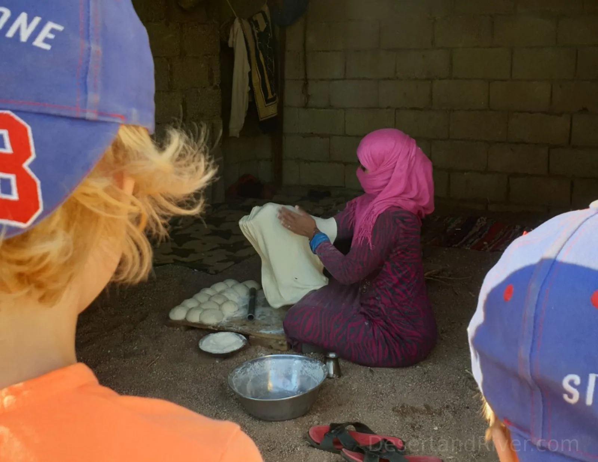
Nawamis-Dorf
Das Nawamis-Dorf auf der Sinai-Halbinsel, Ägypten, ist eine kleine Siedlung nahe alter runder Steingräber, bekannt für Kameltraining und traditionelles Beduinenleben.
Im Dorf leben Menschen mit Ziegen, Hühnern, Tauben und Enten zusammen, ein enges Miteinander von Menschen, Tieren und Kindern in einer offenen, unumzäunten Umgebung. Dieser Alltag spielt sich neben den stillen, aufgeschichteten Steingräbern der frühen Bronzezeit ab und vermittelt ein ruhiges Gefühl der Kontinuität zwischen Vergangenheit und Gegenwart. Die für Rennen trainierten Kamele bilden einen leisen, lebendigen Kontrast zur Stille der umgebenden Wüstenebene.
Der Weg durch das Dorf und zu den Gräbern ist leicht, über flaches Wüstengelände.

Gebl El Matamir
Gebl El Matamir ist ein vom Wind geformtes Bergmassiv im zentralen Sinai, wo sandbedeckte Felsblöcke aus dem Wüstenplateau ragen; ihre verborgenen Konturen spiegeln die Bedeutung von „Matamir“ wider.
Die großen Steine des Massivs liegen teilweise unter Sand begraben und wurden über lange Zeit von beständigen Wüstenwinden geformt, was eine Landschaft verborgener Formen und feiner Strukturen schafft. Dieses stille Zusammenspiel von Stein und Sand weckt ein Gefühl von Verborgenheit und Ruhe, eine nachdenkliche Begegnung mit den langsamen, beständigen Veränderungen der Wüste.
Ungefähre Wanderzeit über den Hauptkamm: 2–3 Stunden.
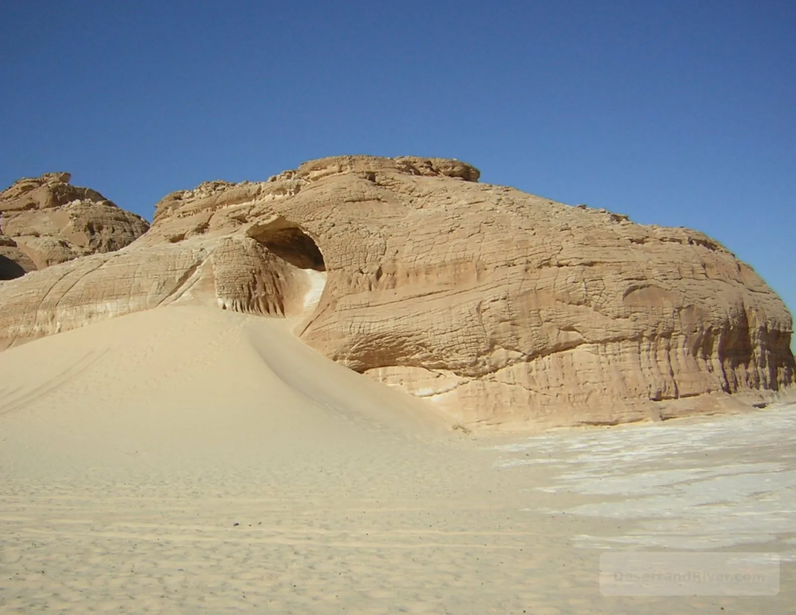
Gebl Makhroom (Dragon Head Mountain)
Gebl Makhroom, auch Dragon Head Mountain genannt, ist ein Sandsteingipfel im südlichen Sinai, von Wind und Sand so geformt, dass er einem Dinosaurierkopf mit hohler „Augenhöhle“ ähnelt.
Die Winderosion hat ein markantes Loch geschaffen, das an ein Dinosaurierauge erinnert, während die umliegenden Kämme an Zähne und Kieferlinien denken lassen. Diese natürliche Bildhauerei betont die raue Größe der Landschaft und vermittelt ein nachdenkliches Gefühl dafür, wie geduldig die Zeit die Sinai-Wüste formt.
Höhe etwa 820 Meter; mittelschwere Wanderung

Sanddüne Hedoda
Die Sanddüne Hedoda ist eine weitläufige Wüstenformation im südlichen Sinai mit sanft gewelltem Sand, geformt von Wind und jahreszeitlichen Klimamustern.
Die Düne liegt in der trockenen Landschaft, die die Berge des Sinai mit den tiefer gelegenen Wüstenebenen verbindet, und vermittelt ein stilles, fast meditatives Gefühl von Weite. Ihre glatten, wandernden Konturen spiegeln das langsame Vergehen der Zeit, wo Fußspuren schnell verschwinden und sich der Horizont ununterbrochen erstreckt.
Der Weg über die Düne ist kurz, und sie ist ein großartiger Ort zum Sandboarden.

Bir Safra
Bir Safra ist ein Wüstenbrunnen im südlichen Sinai, Ägypten, 1986 angelegt, um die Tiere einer inzwischen verlassenen Beduinensiedlung mit Trinkwasser zu versorgen.
Inmitten weiter Sandsteinebenen gelegen, lieferte der Brunnen zuverlässig Wasser für Vieh und Bewohner, auch wenn die Siedlung heute nicht mehr existiert. Sein klares Wasser spiegelt den weiten Wüstenhimmel und weckt ein stilles Gefühl von Beständigkeit und den leisen Spuren menschlicher Präsenz in einer sonst zeitlosen Landschaft.
Mit Geländewagen erreichbar
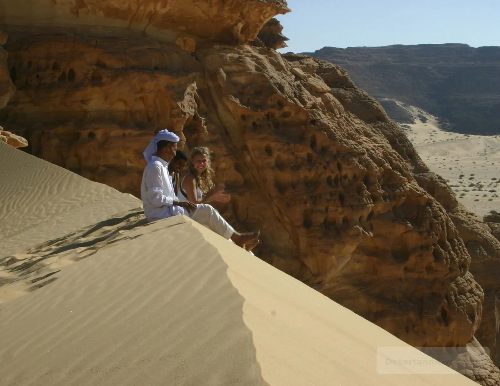
Sanddüne Safra
Die Sanddüne Safra ist eine markante Wüstenformation im südlichen Sinai, benannt nach ihrem typisch gelben Sand („safra“ bedeutet auf Arabisch gelb), vor dem Hintergrund trockener Berge.
Die Düne gehört zur weiten Wüstenlandschaft des Sinai, über Jahrtausende von Wind und Temperaturschwankungen geformt. Ihre glatten, goldenen Hänge, ideal zum Sandboarden, vermitteln ein stilles Gefühl stehender Zeit und laden zum Nachdenken über den weiten, wandernden Horizont ein.
Der Aufstieg zum Gipfel dauert etwa 15 Minuten; kurz vor dem Gipfel kann es wegen des weichen, tiefen Sandes anstrengend werden.
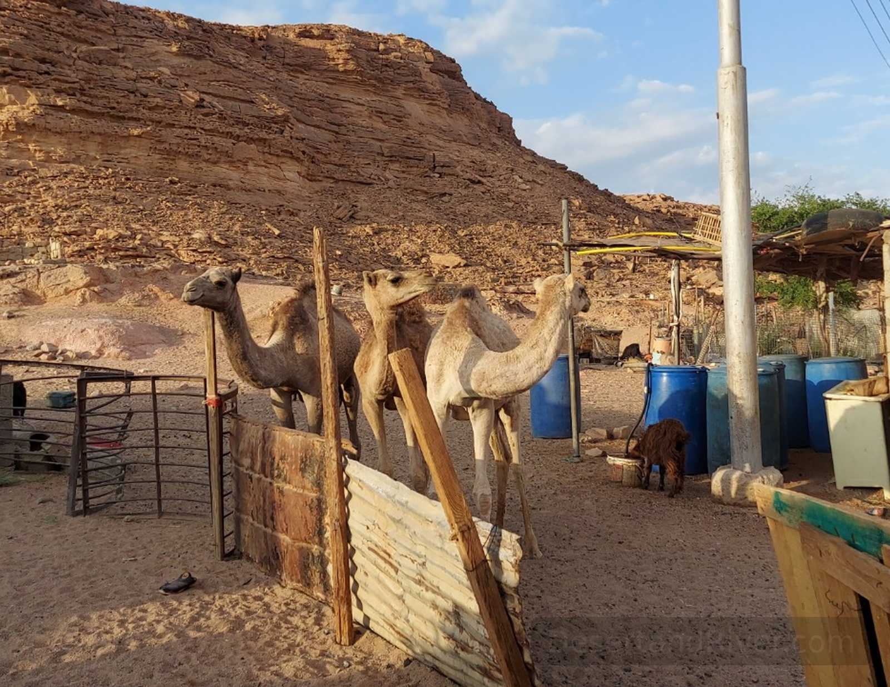
Das Dorf Arada
Arada ist ein kleines Dorf an der Straße im südlichen Sinai, zwischen Nuweiba und der Straße nach St. Katharina, wo traditionelles Beduinenleben neben Kunsthandwerk weitergeht.
Das Dorf besteht aus einfachen Häusern, in denen die Bewohner weben, spinnen und andere Handwerke ausüben und so ihre Traditionen über Generationen bewahren. Die Zeit vergeht hier langsam, bestimmt vom Rhythmus der täglichen Arbeit und der kargen Wüstenlandschaft, und vermittelt ein stilles Gefühl von Beständigkeit und Gegenwart.
Über die Straße erreichbar; ein Rundgang durch das Dorf dauert etwa 20–30 Minuten.
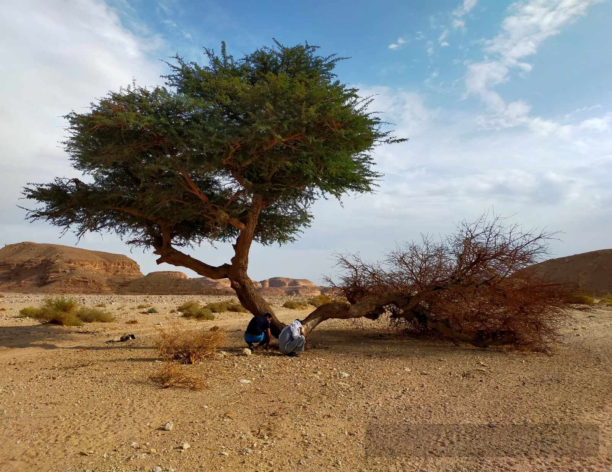
Wadi Arada
Das Wadi Arada ist ein abgelegenes Wüstental im südlichen Sinai, Ägypten, bekannt für schroffe Sandsteinformationen und alte Felsinschriften an seinen Hängen.
Im Tal finden sich zahlreiche Petroglyphen mit Szenen aus dem Alltag, ähnlich wie in den Tempeln des Sinai, darunter die eindrucksvolle Darstellung einer Wildkatze, wahrscheinlich eines Leoparden oder Löwen, die etwa 8.000 Jahre alt sein soll, aus einer Zeit, als die Region einer Savanne glich. Das Sonnenlicht auf den Inschriften zeigt, wie sie die Zeit überdauert haben, und lädt zum Nachdenken über das Leben der Menschen ein, die einst durch diese stille Landschaft zogen. Voller bunter Felsen und Inschriften.
Über eine 1-stündige Wanderung von der Straße St. Katharina–Nuweiba erreichbar. Leichte Wanderung.
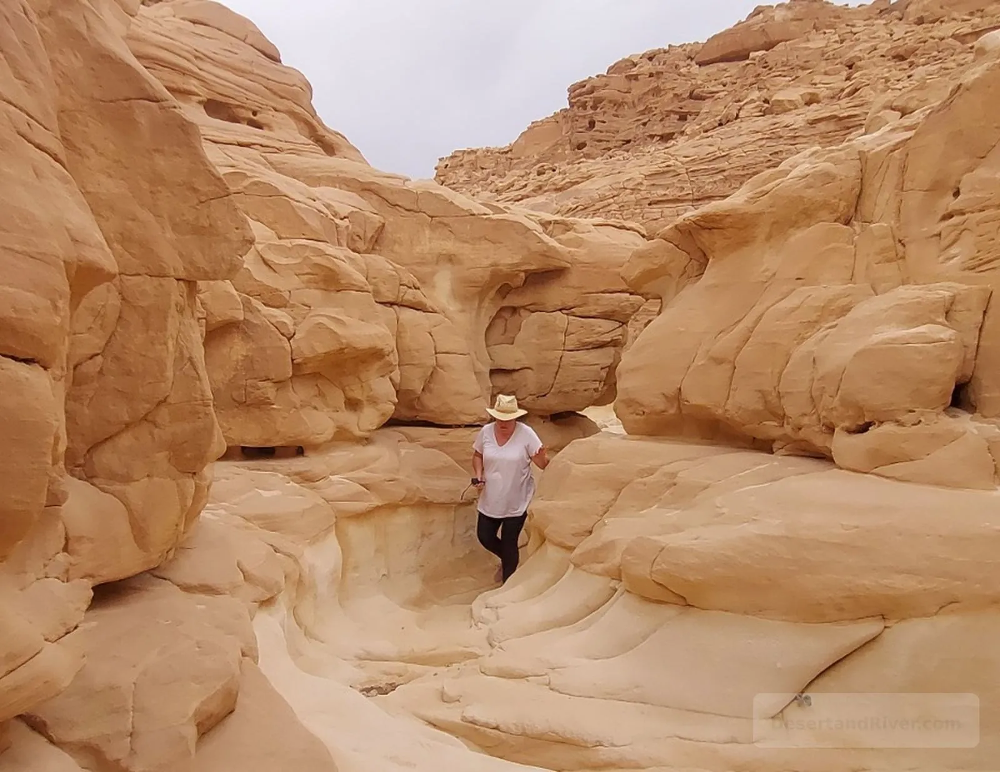
Arada Canyon (Double Canyon)
Der Arada Canyon, auch Double Canyon genannt, ist eine Sandsteinformation im südlichen Sinai mit zwei verbundenen, durch Erosion geformten Schluchten und einem Plateau mit alten Meeresfossilien.
Der Canyon verdankt seinen Namen den zwei Wegen: Man steigt durch die eine Schlucht hinauf und am Ende durch die andere hinab, entlang von Gestein, das an den amerikanischen Antelope Canyon erinnert. Auf dem Plateau zeugen versteinerte Korallen und Meerestiere vom prähistorischen Meeresboden, während der enge Durchgang ein stilles Gefühl für Größe und Zeittiefe vermittelt.
Die komplette Durchquerung des Double Canyon, einschließlich Auf- und Abstieg, dauert etwa 1–1,5 Stunden.
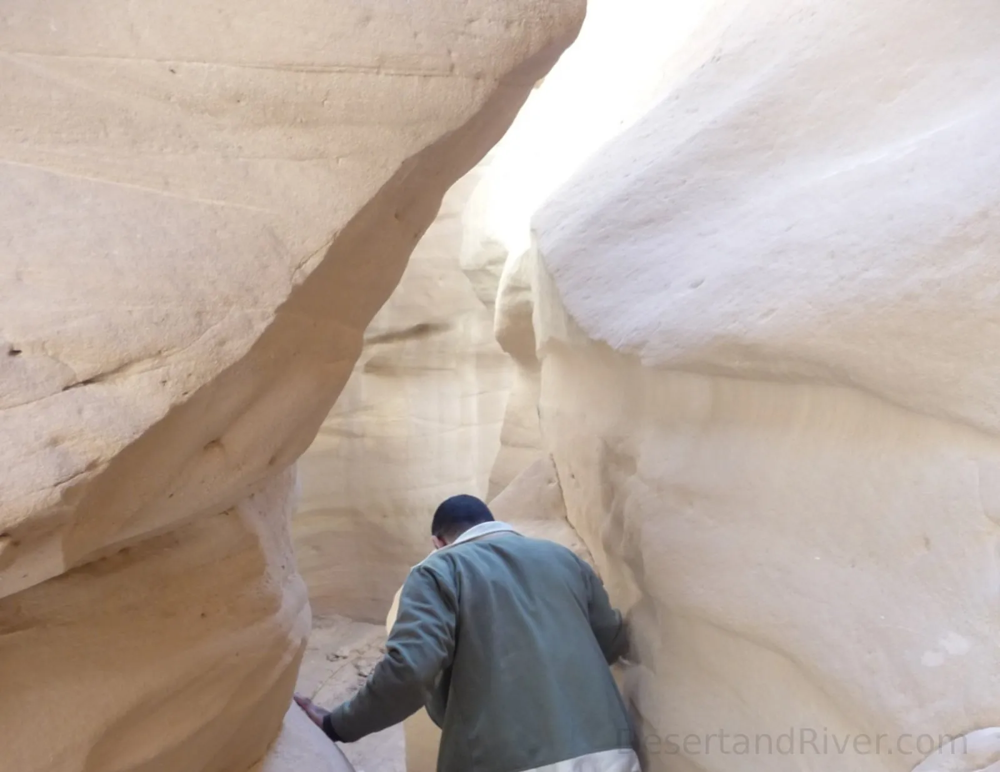
Pigeon Canyon
Der Pigeon Canyon ist ein breites, tief liegendes Sandsteintal im südlichen Sinai, Ägypten, in dessen natürlichen Felsnischen am Boden und an den Hängen wilde Tauben leben.
Der Canyon zieht sich sanft durch trockenes Gelände und bietet Tauben einen Lebensraum, die von Natur aus zwischen den Felsen leben und nicht von Menschen gehalten werden. Das Sonnenlicht wandert langsam über die breiten, flachen Wände und hebt Strukturen und Muster hervor, die ein leises Gefühl von Ruhe vermitteln.
Etwa 1 Stunde Wanderung; leicht.

Zig Zag Canyon
Der Zig Zag Canyon ist eine Sandsteinschlucht im südlichen Sinai, benannt nach ihren scharfen Biegungen. Er liegt nahe der Straße St. Katharina–Nuweiba und bildet einen kompakten geologischen Korridor.
Der charakteristische Zickzackverlauf ist das Ergebnis jahrtausendelanger Erosion, die intime Räume zwischen den geschichteten Sandsteinwänden geschaffen hat. Hier eine Nacht im sanften Kerzenlicht zu verbringen ist wunderschön und vermittelt ein stilles, nachdenkliches Gefühl von Geborgenheit und Ruhe.
Die Wanderung dauert hin und zurück etwa 30 Minuten; mittelschwer.

Gebl Gunna
Der Gebl Gunna ist ein Sandsteinberg im zentralen Sinai, bekannt für Geoden, Steinschlote und geothermische Öffnungen auf dem Gipfel.
Auf dem Gipfel befinden sich geothermische Öffnungen, die normalerweise nur unter dem Meer vorkommen, ein Hinweis auf den uralten marinen Ursprung des Berges. Steinschlote markieren diese Öffnungen, und verstreute Geoden fangen das Wüstenlicht ein, was ein stilles, nachdenkliches Gefühl für Zeit und die langsame geologische Verwandlung des Landes weckt.
Etwa 1 Stunde Wanderung von der Straße St. Katharina–Nuweiba, mittelschwer.

Katharinenkloster
Das Katharinenkloster am Fuß des Berges Sinai im Süden Ägyptens ist das älteste noch bewohnte christliche Kloster der Welt, mit ununterbrochenem Klosterleben seit dem 6. Jahrhundert.
Unter byzantinischer Schirmherrschaft gegründet, beherbergt das Kloster alte Handschriften, Ikonen und Reliquien, Zeugnisse jahrhundertelanger ununterbrochener religiöser Praxis. Umgeben von schroffen Bergen wecken die stillen Innenhöfe und schlichten Steinbauten eine nachdenkliche Ruhe, im Kontrast zur rauen Wüstenlandschaft draußen.
Auf 1.580 m über dem Meeresspiegel; ganzjährig über mittelschwere Wege erreichbar.

Blue Desert
Die Blue Desert ist ein abgelegenes Gebiet im südlichen Sinai, Ägypten, bekannt für helle Sandsteinhügel mit bläulichem Mineralschimmer und vereinzelte bemalte Felsformationen.
1979 bemalte der belgische Künstler Jean Verame hier mehrere Felswände leuchtend blau als Symbol für den Frieden und fügte den natürlichen Formen der Wüste so eine menschliche Ebene hinzu. Die sanfte, gedämpfte Landschaft mit diesen blauen Akzenten weckt Ruhe und Besinnung, ein stiller Kontrast zu den umliegenden Bergen und Tälern.
Mit Geländewagen erreichbar

Berg Sinai
Der Berg Sinai ist ein markanter Granitgipfel im südlichen Sinai, Ägypten, historisch und religiös bedeutsam als Ort biblischer Offenbarung.
Mit 2.285 Metern gehört der Berg Sinai zur rauen Wüstenlandschaft zwischen St. Katharina und dem Roten Meer. Seine kargen Hänge und der stille Gipfel wecken ein tiefes Gefühl von Einsamkeit und Zeittiefe und verbinden Besucher mit der Größe von Natur und Geschichte.
Höhe: 2.285 Meter; der Aufstieg dauert von den Wegen am Fuß meist 2–3 Stunden.

Farsh Eliyah
Ein abgelegenes Plateau im Sinai, Ägypten, etwa auf halbem Weg zwischen dem Katharinenkloster und dem Gipfel des Berges Sinai, mit rauem Gelände und spärlicher Vegetation.
Farsh Eliyah ist eine erhöhte, felsige Landschaft, über Jahrtausende durch Erosion geformt, mit Panoramablicken über die umliegenden Täler und fernen Berge. Das Plateau vermittelt ein stilles Gefühl von Abgeschiedenheit, in dem die Stille der Wüste die Größe und Beständigkeit des Geländes betont: eine nachdenkliche Pause zwischen dem Kloster unten und dem Gipfel oben.
Über eine mittelschwere Wanderung von 1,5–2 Stunden vom Kloster in Richtung Berg Sinai erreichbar.
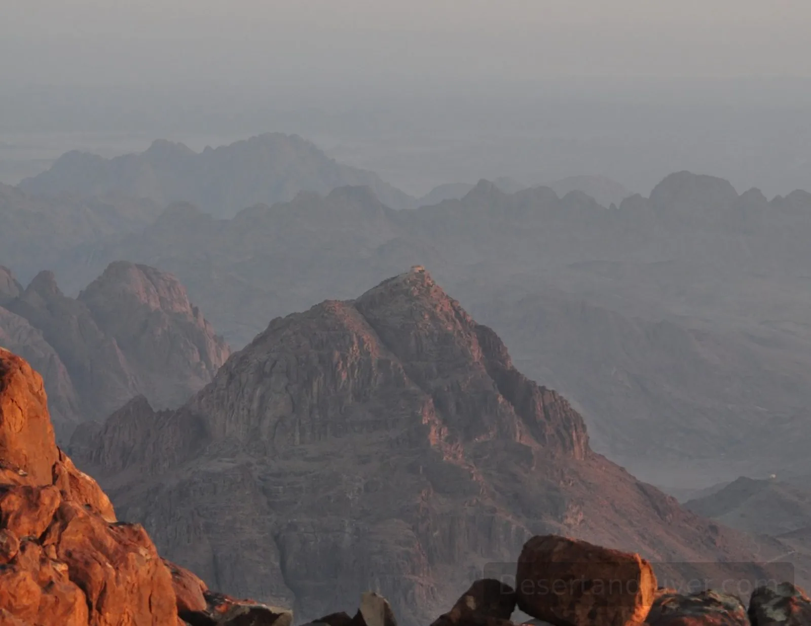
Katharinenberg
Der Katharinenberg ist der höchste Gipfel der Sinai-Halbinsel, nahe St. Katharina gelegen, ein markantes Massiv aus Granit und Sandstein in rauer Wüstenlandschaft.
Historisch bedeutsam durch die Nähe zum Katharinenkloster und die Verbindung zu Pilgerreisen, erhebt sich der Berg steil über die umliegenden Ebenen und schafft einen starken optischen Kontrast. Die stillen Weiten und weiten Ausblicke vermitteln ein tiefes Gefühl von Ruhe und Größe und laden zur Besinnung über Landschaft und Zeit ein.
Höhe: 2.634 Meter; meist ein anspruchsvoller Aufstieg von 2–3 Stunden ab St. Katharina.

Wadi el Arbaeen
Das Wadi el Arbaein ist ein breites, trockenes Tal im südlichen Sinai, das den Katharinenberg mit dem nahen Kloster verbindet und saisonales Wasser durch die umliegenden Sandsteinkämme leitet.
Das Wadi bildet einen einstündigen Wanderweg zwischen Berg und Kloster, mit einem Boden aus verstreutem Kies und spärlicher Wüstenvegetation. Beim Durchqueren vermitteln die umschließenden Kämme ein stilles Gefühl von Ruhe und dem langsamen Vergehen geologischer Zeit, was in der rauen Landschaft zur Besinnung einlädt.
Einstündige Wanderung; mittelschweres Gelände, für die meisten Wanderer geeignet.

Sheikh Mohsin
Sheikh Mohsin ist ein bescheidener Felsvorsprung in der Wüste des südlichen Sinai, Ägypten, bekannt für steinzeitliche Steinsetzungen, spärliche Vegetation und die Nähe zu den umliegenden Sandsteinebenen.
Hier liegen Steine, die von frühen Bewohnern angeordnet wurden, ein greifbarer Beleg menschlicher Aktivität bis in die Steinzeit. Die stillen Weiten aus ockerfarbenem Fels und sonnengebackener Erde wecken eine zeitlose Ruhe und verbinden Besucher leise mit der Tiefe der Geschichte und der kargen Größe der Wüste.
Über unbefestigte Wüstenpisten erreichbar

Wadi Zaraniq
Das Wadi Zaraniq ist ein trockenes Tal im zentralen Sinai, ein natürlicher Korridor aus Sandstein und Wüstengelände, der seit jeher als Beduinenroute zwischen Siedlungen dient.
Das Wadi erstreckt sich über schroffe Berge und Ebenen, und seine Weite vermittelt ein stilles, beständiges Gefühl für Größe und Geschichte der Wüste. Reisende durchqueren es oft mit dem Fahrzeug, auf einem Weg, der seit Langem für lokalen Verkehr und Handel genutzt wird.
Die Fahrt durch das Wadi Zaraniq dauert etwa 2–3 Stunden.

Zaraniq-Höhle
Die Zaraniq-Höhle ist eine Kalksteinformation in der Wüste des Südsinai beim Wadi Zaraniq, bekannt für ihre alten, farbigen Wandmalereien, die etwa 12.000 Jahre alt sind.
Im Inneren der Höhle ist lebendige prähistorische Kunst erhalten, ein seltener Einblick in frühen menschlichen Ausdruck in der Region. Wer den kühlen, schattigen Raum betritt, erlebt einen starken Kontrast zur sonnigen Wüste draußen, was ein Gefühl tiefer Kontinuität und stiller Besinnung auf Jahrtausende menschlicher Präsenz weckt.
Über eine kurze, 20-minütige Wanderung von der Hauptpiste erreichbar.

Nabatäische Kriegsszene
Die Nabatäische Kriegsszene ist ein altes Felsrelief im südlichen Sinai, das nabatäische Kriegsbilder zeigt, gemeißelt in Sandsteinklippen entlang historischer Handelswege.
Das Relief stammt wahrscheinlich aus dem frühen ersten Jahrtausend n. Chr. und zeigt bewaffnete Figuren und Kamele in lebhafter Formation, ein Spiegel der militärischen und kulturellen Präsenz der Nabatäer in der Region. Die verwitterte Oberfläche und die abgelegene Lage vermitteln ein stilles Gefühl von Beständigkeit und Vergänglichkeit und laden zum Nachdenken über menschliches Streben in der weiten Wüstenlandschaft ein.
Mit Geländewagen erreichbar
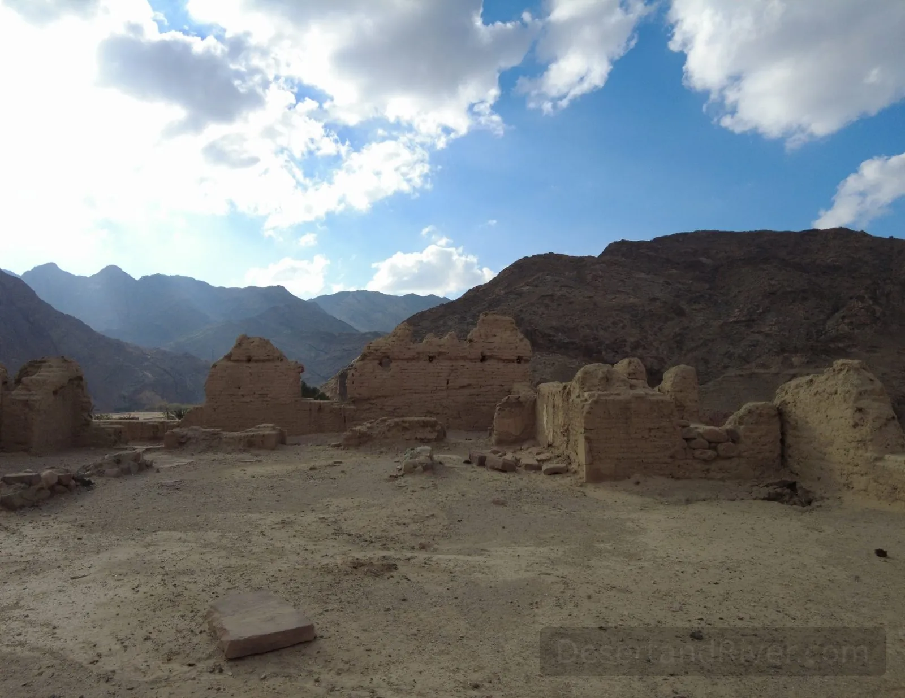
Wadi Feiran
Das Wadi Feiran ist das größte und fruchtbarste Wadi im Südsinai, ein weites Wüstental mit Palmenhainen und Siedlungen nordwestlich von St. Katharina.
Das Tal wird seit Langem mit frühchristlichem Mönchtum in Verbindung gebracht und manchmal mit dem biblischen Refidim gleichgesetzt. Zwischen den Gärten sind Spuren byzantinischer Kirchen und Einsiedlerbehausungen erhalten. Umrahmt von Granitbergen unterbricht das unerwartete Grün die Trockenheit ringsum und schafft ein stilles Gefühl der Kontinuität zwischen alter Besiedlung und dem heutigen Rhythmus des Beduinenlebens.
Etwa 130 km nordwestlich von Scharm El-Scheich; ganzjährig über eine asphaltierte Straße erreichbar.

Kloster der Sieben Nonnen
Das Kloster der Sieben Nonnen im Südsinai nahe dem Berg Sinai ist eine kleine historische religiöse Stätte, die mit der frühchristlichen Klostertradition in der Sinai-Wüste verbunden ist.
Traditionell mit koptisch-christlicher Frömmigkeit verbunden, spiegelt das Kloster das asketische Erbe wider, das sich seit der Spätantike rund um den Berg Sinai entwickelte. In einer trockenen Berglandschaft wecken die bescheidenen Steinbauten und die stille Umgebung die Ruhe, die die frühen Mönche suchten, und lassen Besucher die von Wüstenlicht, Wind und Zeit geprägte Abgeschiedenheit spüren.
Über eine raue Wüstenpiste erreichbar; die Bedingungen wechseln

Al Karm Ecolodge
Die Al Karm Ecolodge ist eine kleine, nachhaltig gebaute Wüstenlodge im Südsinai, errichtet aus lokalen Materialien und mit traditionellen Bautechniken, inmitten einer bergigen Beduinenlandschaft.
Gebaut aus biologisch abbaubaren, lokalen Materialien und mit regionalen Bautechniken, zeigt die Lodge, wie alte Wüstentraditionen zu heutigen ökologischen Anliegen passen. Lehmwände und offene Innenhöfe mildern die Hitze und rahmen weite Bergkulissen, wo Stille und wechselndes Licht das Bewusstsein für Größe, Zeit und elementare Einfachheit schärfen.
Im Südsinai, je nach Wüstenroute etwa 1–2 Stunden Fahrt von Dahab.

Sheikh Awad
Sheikh Awad ist eine alte Wüstenstätte im Südsinai, Ägypten, bekannt für steinzeitliche Überreste und ihre Lage im Hochgebirge zwischen den Wadis im Inneren und den Küstenebenen.
Zu den archäologischen Spuren gehören Steinbauten und Steinwerkzeuge früher menschlicher Besiedlung, die bis in die Steinzeit zurückreicht. Die verstreuten Formationen aus bearbeitetem Stein vor dem kargen Granitgelände wecken eine stille Kontinuität menschlicher Präsenz, in der die Größe der geologischen Zeit einzelne Leben klein erscheinen lässt und doch ihre Spuren bewahrt.
Im bergigen Inneren des Südsinai; mit Geländewagen über Wüstenpisten erreichbar.

Das nabatäische Dorf
Das nabatäische Dorf bei St. Katharina im Südsinai ist eine archäologische Wüstensiedlung mit den steinernen Überresten einer Handelsgemeinschaft, die mit den Nabatäern verbunden war.
Die Stätte liegt im bergigen Inneren des Südsinai und wird oft über das Gebiet El Karm besucht. Sie besteht aus niedrigen, verwitterten Steinbauten, die mit dem trockenen Gelände verschmelzen. Die Nabatäer, bekannt für ihre regionalen Handelsnetze rund um Petra, unterhielten Routen durch den Sinai, und diese Siedlung zeigt, wie sie sich an eine harte Wüstenumgebung anpassten. Zwischen den Überresten spürt man eher die Größe der Zeit als die der Architektur.
Mit Geländewagen erreichbar
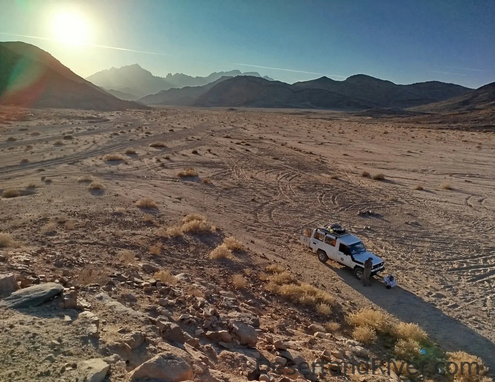
Wadi Slaf
Das Wadi Slaf ist ein historisch bedeutsames Wüstental im Gouvernement Südsinai, Ägypten, und ein wichtiger Korridor durch das Bergland in Richtung St. Katharina.
Zwischen hohen präkambrischen Formationen aus Migmatit, Gneis und Amphibolit gelegen, dient das Wadi seit Langem als Verbindung zwischen dem Wadi Feiran und dem Wadi El Sheikh; in den 1920er-Jahren wurde eine Fahrzeugpiste angelegt. Archäologische Überreste, darunter prähistorische Nawamis und Spuren frühen Kupferbergbaus in nahen Gebieten wie dem Wadi Nasb, zeugen von dauerhafter menschlicher Präsenz; die Größe des Tals und die von Mineralien gedunkelten Felswände wecken ein stilles Bewusstsein für geologische und historische Zeit.
Mit Geländewagen erreichbar

Wadi Isla
Das Wadi Isla ist ein bergiges Wüstental im Gouvernement Südsinai, Ägypten, nahe El Tor und St. Katharina, bekannt für seine Granitformationen und das trockene, raue Gelände.
Zwischen El Tor und St. Katharina gelegen, gehört das Wadi Isla zum Granitgebirge, das das Innere des Südsinai prägt. Seine engen Durchgänge und verwitterten Felswände zeigen geologische Prozesse über Jahrtausende, während die stille Größe der Landschaft ein Bewusstsein für eine Zeit weckt, die nicht in Stunden, sondern in Stein gemessen wird.
Übliche Wanderrouten durch das Wadi dauern je nach Tempo und Einstieg 2–4 Stunden.

Wadi Hebran
Das Wadi Hebran ist ein weites Wüstental im Südsinai, Ägypten, bekannt für traditionelle Beduinenrouten und besondere prähistorische Steinbauten, die Nawamis, an seinen Ufern.
Früher diente das Wadi Hebran als Durchgangs- und Weideroute zwischen den Bergsiedlungen und der Küste des Roten Meeres. Zwei Nawamis an den Ufern des Wadis werden von den Strahlen der untergehenden Sonne beleuchtet, eine feine Ausrichtung, die vielleicht das Lebensende symbolisierte, und laden zum Nachdenken über das Zusammenspiel von menschlichem Ritual, Zeit und weiter Wüstenlandschaft ein.
Mit Geländewagen erreichbar; die Durchquerung des mittleren Abschnitts dauert je nach Route und Bedingungen meist 2–3 Stunden.

Wadi Mukatab
Das Wadi Mukatab im Südsinai, Ägypten, ist ein trockenes Tal, das für seine zahlreichen alten, in Felswände gemeißelten Inschriften bekannt ist.
Hier ist eine bemerkenswerte Sammlung nabatäischer und vornabatäischer Petroglyphen erhalten, darunter geometrische Motive und frühe Schriften, die die historischen Handels- und Kulturnetze der Region widerspiegeln. Zwischen den verwitterten Steinen spürt man das langsame Vergehen der Zeit und die beständige Stille dieser Wüstenlandschaft.
Über eine mittelschwere Wanderung von 1–2 Stunden erreichbar

Wadi el Seha
Das Wadi el Seha ist ein abgelegenes Wüstental im Südsinai, Ägypten, mit schroffen Felsformationen, zeitweise fließendem Wasser und Spuren alter menschlicher Aktivität.
Das Wadi zieht sich durch die trockene Landschaft und gewährt einen Einblick in die geologische Geschichte des Sinai und seine spärliche, widerstandsfähige Vegetation. Beim Gehen über den Talboden spürt man die Stille und die Dimension der Zeit, nur unterbrochen vom Flüstern des Windes über den Steinen.
Mit Geländewagen erreichbar; mittleres Gehpensum

Wadi el Maghara
Das Wadi el Maghara ist ein trockenes Tal im Südsinai, Ägypten, bekannt für prähistorische Höhlen, alte Inschriften und einige der ältesten bekannten ägyptischen Türkisminen aus der Zeit des 7. Königs der 1. Dynastie.
Im Wadi finden sich über 4.700 Jahre alte Inschriften mit gleich großen Figuren, die ein Kind an der Hand halten, eine seltene Darstellung von Gleichheit in der altägyptischen Kunst. Zusammen mit Grabresten und Petroglyphen vermitteln die stillen Wüstenweiten ein tiefes Gefühl von Kontinuität und menschlicher Verbundenheit über Jahrtausende.
Mit Geländewagen erreichbar

Wadi Baba
Das Wadi Baba ist ein weites, trockenes Einzugsgebiet im Südwesten des Sinai, Ägypten, das Wasser in den Golf von Sues leitet und raues Granitgelände mit vielschichtiger Geschichte umfasst.
Im Wadi finden sich Spuren menschlicher Aktivität aus pharaonischer, nabatäischer, christlicher und islamischer Zeit, darunter verstreute Ruinen und Inschriften. In der kargen Landschaft vermittelt das Lichtspiel auf den Granitkämmen eine zeitlose Ruhe und ein leises Gefühl der Verbundenheit mit der beständigen Geschichte der Region.
Mit Geländewagen erreichbar; bei den seltenen Regenfällen kommt es häufig zu Sturzfluten.

Wadi Gharandal
Das Wadi Gharandal ist ein weites Wüstental im Westen des Südsinai, Ägypten, bekannt für saisonale Süßwasserquellen und Palmengruppen in einer sonst trockenen Landschaft.
In der Küstenebene zwischen dem Golf von Sues und dem Inneren des Sinai gelegen, gehört das Wadi zu einem alten Wegenetz zwischen Ägypten und der Levante. Anders als viele trockene Täler der Region führt es zeitweise Wasser und trägt etwas Vegetation, was einen eindrucksvollen Kontrast zwischen Stein, Sand und Grün schafft: eine stille Erinnerung an Widerstandskraft inmitten scheinbarer Kargheit.
Mit Geländewagen erreichbar

Ayoun Musa
Ain Musa, die Mosesquellen, ist eine Gruppe von Süßwasserquellen im Südsinai nahe dem Golf von Sues, historisch mit der biblischen und koranischen Erzählung über Moses verbunden und später während der israelischen Besetzung der Halbinsel als militärische Stellung genutzt.
Die Quellen liegen in einer spärlich bewachsenen Wüstenebene; ihre bescheidenen Becken und Palmenhaine bilden einen gedämpften Kontrast zur trockenen Landschaft ringsum. Mitte des 20. Jahrhunderts wurde das Gebiet wegen seiner strategischen Lage von israelischen Truppen während der Besetzung des Sinai (1967–1982) als befestigter Stützpunkt genutzt. Überreste davon, etwa Erdwälle und Verteidigungsstellungen, sind noch sichtbar, neben Gedenkstätten für spätere ägyptische Militäraktionen.
Etwa 25–30 km südlich des Ahmed-Hamdi-Tunnels, über die Straße erreichbar.

Wadi Nasb
Das Wadi Nasb ist ein trockenes Tal (Wadi) im Südsinai, Ägypten, bekannt für umfangreiche archäologische Überreste alter Kupferverhüttung und damit verbundener industrieller Tätigkeit in der rauen Wüstenlandschaft des Sinai.
In etwa 355 m Höhe im Südwesten des Sinai gelegen, war das Wadi Nasb vom Alten Reich bis in spätere Zeiten ein Zentrum der Erzverarbeitung, wo Kupfererz in einem Komplex aus Öfen, Verwaltungsräumen und Wachposten zu Metall verarbeitet wurde. Die Menge an Schlacke und Bauresten zeugt von langer Produktion und dem bleibenden Abdruck menschlicher Arbeit in diesem kargen, sonnengebackenen Gelände.
Höhe: ~355 m über dem Meeresspiegel, mit archäologischen Schichten, die von langer alter und nabatäischer Metallverarbeitung zeugen.

Bir Nasb
Bir Nasb ist ein Brunnen (Bir) im rauen Inneren des Gouvernements Südsinai, Ägypten, im trockenen Hochland der Halbinsel.
Bir Nasb liegt auf etwa 917 Metern Höhe und ist eine traditionelle Grundwasserquelle in einer sonst trockenen Landschaft, in der saisonale Winde und lange Tage ein spürbares Gefühl von Weite schaffen. Der Brunnen zeugt von Jahrtausenden menschlicher Anpassung an das Klima des Sinai und diente früher als Orientierungspunkt für Nomadenrouten und gelegentliche Bergbauexpeditionen im nahen Wadi al-Nasb.
Höhe ~917 m über dem Meeresspiegel; im Südsinai, Ägypten.

Rod el-Eir
Rod el-Eir ist ein Wüstenwadi auf der Sinai-Halbinsel, Ägypten, am Weg zum Tempel von Serabit el-Khadim, mit alten Inschriften und Spuren der Tierwelt aus pharaonischer Zeit.
Im Wadi finden sich Felsritzungen von Booten, Giraffen und anderen Tieren aus pharaonischer Zeit, darunter ein Zeichen, das als ältester „Hashtag“ der Region gilt. Zwischen diesen Petroglyphen spürt man eine stille Verbindung zu den Menschen, die diese Landschaft vor Tausenden von Jahren durchquerten, und zu dem inzwischen verschwundenen Ökosystem, in dem sie lebten.
Mit Geländewagen erreichbar; auf dem Weg zum Tempel von Serabit el-Khadim

Serabit el-Khadim
Serabit el-Khadim im Südwesten des Sinai, Ägypten, ist eine alte archäologische Stätte mit ausgedehnten Türkis- und Kupferminen, den Überresten eines Hathor-Tempels und frühen alphabetischen Inschriften.
Auf dieser Plateaustätte arbeiteten Altägypter und Arbeiter aus dem Nahen Osten mindestens seit dem Mittleren Reich, mit einem Tempel für Hathor, die Beschützerin der Wüste und „Herrin des Türkis“. Die verstreuten Stelen und Felsinschriften in früher protosinaitischer Schrift, gemeißelt in den sonnengebleichten Stein, zeugen von einer langen menschlichen Verbindung mit dieser hohen, windigen Landschaft, in der Sprache und Glaube buchstäblich in Stein festgehalten wurden.
Etwa 43 km östlich von Abu Zenima auf einem Plateau in rund 850 m Höhe.

Magharet el Teleha
Magharet el Teleha ist eine Kalksteinhöhle im südlichen Sinai, Ägypten, bekannt für prähistorische Inschriften in protosinaitischer Schrift und ägyptischen Hieroglyphen, nahe alten Türkisminen.
Die Höhle enthält die ältesten bekannten Beispiele des protosinaitischen Alphabets neben hieroglyphischen Inschriften, eine Kombination, die erstmals vom Archäologen Flinders Petrie dokumentiert wurde. Im Inneren herrscht ein gedämpftes Gefühl stillstehender Zeit, in der die frühe Schrift und die nahen Türkisminen sowohl die Kreativität als auch die Arbeit alter Völker in der weiten Sinai-Landschaft zeigen.

Umm Yasser
Umm Yasser, eine Pionierin aus dem Beduinenstamm der Hamada, ist die erste weibliche Hauptführerin auf dem Sinai Trail und leitet Trekkingtouren durch die Landschaften und Kultur des Südsinai.
Seit 2019 führt Umm Yasser auf dem traditionell männlich geprägten Sinai Trail, überwiegend Frauen, und teilt ihr Wissen über Pflanzen, Geschichte und Beduinenleben. Ihre Präsenz strahlt stille Widerstandskraft und Beständigkeit aus: Sie verbindet jahrhundertealte Traditionen mit neuen Möglichkeiten für Frauen in der Region.
Führt seit 2019; erste weibliche Beduinen-Hauptführerin auf dem Sinai Trail.

Wadi el Sahu
Das Wadi el Sahu ist ein abgelegenes Wadi im südlichen Sinai mit einem abgeschiedenen Beduinendorf und alten Felsinschriften aus pharaonischer, nabatäischer und prähistorischer Zeit.
Das Dorf wird vor allem vom Stamm der Hamada bewohnt und bietet Besuchern Einblicke in traditionelles Beduinenleben und Gastfreundschaft, besonders verkörpert durch Umm Yasser, die erste weibliche Führerin des Sinai. In der stillen Wüstenlandschaft wecken die gravierten Steine und ausgetretenen Pfade ein tiefes Gefühl von Geschichte und beständiger menschlicher Präsenz.
Mit sichtbaren Felsinschriften aus mehreren Epochen und noch bewohnten traditionellen Beduinenhäusern.

Wadi el Lihyan
Das Wadi el Lihyan ist ein Wüstental im südlichen Sinai, Ägypten, bekannt für alte Felsinschriften, Mineralvorkommen und historische Beduinenpfade.
Im Tal finden sich Petroglyphen und Spuren frühen Bergbaus, Zeugnisse menschlicher Präsenz über Jahrtausende. Das karge, offene Gelände vermittelt eine tiefe Stille, in der die Weite der Wüste die Zeit stillstehen lässt.
Höhe etwa 400–600 Meter über dem Meeresspiegel; über Geländewagenpisten erreichbar.

Jabal Um Bugma
Ein weites, erhöhtes Granitplateau und ehemalige Bergbausiedlung im Südsinai, auf rauem Wüstengelände der ägyptischen Sinai-Halbinsel.
Um Bogma bezeichnet sowohl das Plateau als auch die verlassenen Manganminen aus dem frühen 20. Jahrhundert, angelegt während der britischen Verwaltung und später von ägyptischen Behörden betrieben, bis sie Mitte des 20. Jahrhunderts geschlossen wurden. Der Ort liegt zwischen tiefen Granitschluchten und trockenen Tälern, die Beduinen seit Jahrhunderten durchqueren; Wanderer auf langen Wüstentouren berichten oft von der kargen Stille und der gedämpften Geometrie von Licht und Stein bei Sonnenaufgang.
Mit Geländewagen erreichbar

Wadi Barag
Das Wadi Barag ist ein Tal im zentralen Sinai, bekannt für eindrucksvolle Felsformationen und vielfältige Gesteinsarten, eine malerische Passage entlang der Wüstenstraße.
Bei der Fahrt durch das Wadi Barag entfalten sich die geschichteten Farben und Strukturen der Felsen nach und nach und zeigen geologische Vielfalt ebenso wie die stille, beständige Präsenz der Wüstenlandschaft. Die Steine, von rotem Sandstein bis zu hellem Kalkstein, ergeben einen leisen Rhythmus, der das Vergehen der Zeit markiert.
Mit Geländewagen erreichbar

Sheikh Abu-Taleb
Ein Orientierungspunkt und lokaler Beduinenort im zentralen Sinai, Ägypten, an dem ein Beduinenscheich auf einem bescheidenen Hügel zwischen Wüstenwadis nahe traditionellen Karawanenrouten begraben liegt.
Der Ort liegt in der weiten, trockenen Landschaft des zentralen Sinai am Wadi Islaf und ist bekannt für das Grab einer geachteten Beduinenpersönlichkeit, Sheikh Abu-Taleb, auf einer kleinen Erhebung im Wadi. Reisende und Wüstenbewohner beschreiben eine spürbare Stille an diesem Ort, wo Sand, Stein und weiter Himmel zusammenkommen und die stille Präsenz der Grabstätte das langsame Vergehen der Zeit in dieser dünn besiedelten Region spüren lässt.
Im Wüstengelände des zentralen Sinai nahe dem Wadi Islaf, ein Wegpunkt auf traditionellen Routen durch die Halbinsel.
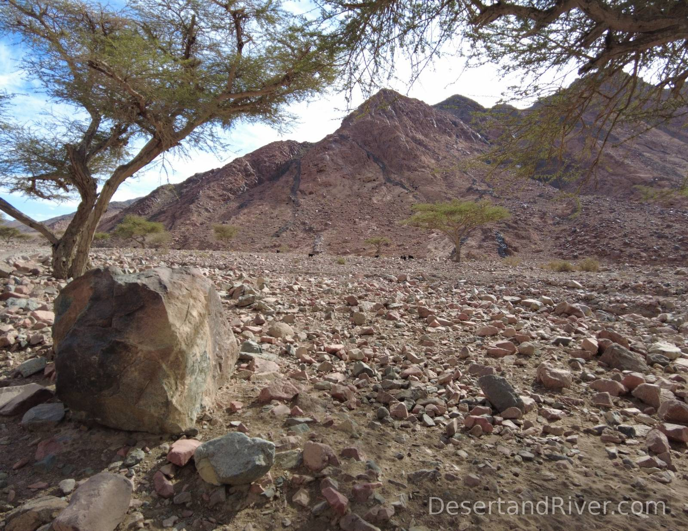
Wadi Sahab
Das Wadi Sahab ist ein trockenes Tal (Wadi) im Südsinai, Ägypten, geprägt von einem zeitweise wasserführenden Flussbett in trockenen Bergen östlich des zentralen Sinai-Hochlands, typisch für das Entwässerungssystem der Halbinsel.
Das Wadi Sahab liegt im rauen Gelände des Südsinai und gehört zum größeren Netz saisonaler Wasserläufe im Kalkstein- und Granithochland der Halbinsel. Im Tal wächst überraschend viel, darunter Gruppen von Akazien, die einen stillen Kontrast zur trockenen Landschaft bilden und zu einem nachdenklichen Gefühl von Ruhe und Zeit einladen.
Höhe etwa 879 m; im Tal gibt es dichte Vegetation und Akazien.

Wadi Barah
Das Wadi Barah ist ein abgelegenes Tal im südlichen Sinai mit bemerkenswerten Felsformationen, alten Inschriften und Spuren historischer menschlicher Aktivität.
Im Wadi Barah liegt Hagar el-Logha, der „Sprechende Stein“, dessen natürliches Echo Stimmen durch das Tal trägt. Erhalten sind nabatäische, koptische, griechische und arabische Inschriften, ein vielschichtiges Zeugnis der langen und vielfältigen menschlichen Präsenz im Sinai, wo die Stille der Wüste zur ruhigen Besinnung einlädt.
Hagar el-Logha ist über einen kurzen Fußweg vom Hauptweg durch das Tal erreichbar.
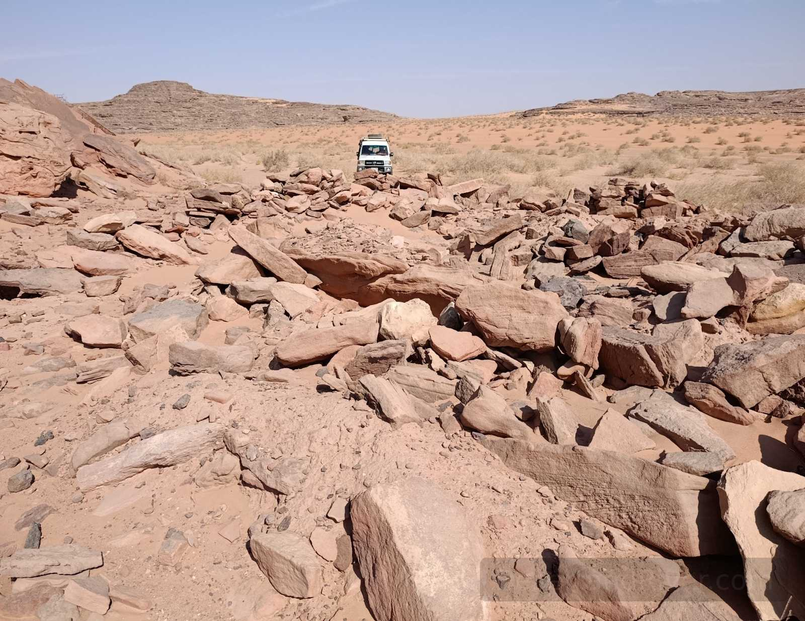
Wadi Khamila
Ein schmales Tal im Südsinai, bekannt für alte Felskunst und Inschriften, die frühe ägyptische und nabatäische Präsenz sowie historischen Bergbau in der Region bezeugen.
Im Wadi Khamila befindet sich eine 5.000 Jahre alte Felstafel, die eine ägyptische Figur zeigt, die einen Einheimischen bezwingt, verbunden mit dem Kupferabbau und dem Gott Min als „Herrscher über das Kupfererz“. Später kamen nabatäische Inschriften hinzu, was einen vielschichtigen Einblick in die lange menschliche Geschichte des Sinai gibt. Die Stille des Tals weckt das Gefühl einer Zeit, die sich über Jahrtausende erstreckt.
Mit Geländewagen erreichbar, dann ein kurzer Fußweg
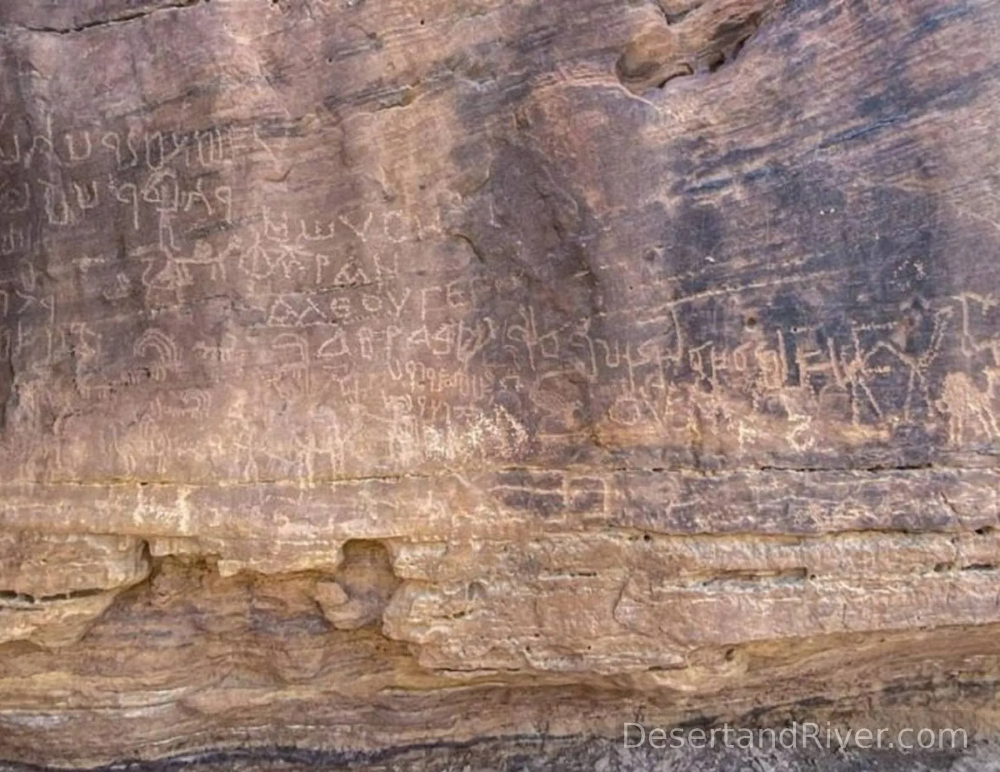
Umm-Arak-Plateau
Das Umm-Arak-Plateau ist ein Sandsteinhochland im Südsinai, Ägypten, mit einem kürzlich dokumentierten Felsüberhang voller vielschichtiger menschlicher Kunst und Inschriften aus Jahrtausenden der Besiedlung.
Etwa 5 km nordöstlich des alten Bergbau- und Tempelkomplexes von Serabit el-Khadim erstreckt sich der natürliche Sandsteinüberhang des Plateaus über mehr als 100 m und enthält Zeichnungen und Gravuren von der späten Vorgeschichte bis in historische Epochen. Die Flächen zeigen verschiedene Techniken und Motive, wie Tiere, Jagdszenen, Reiter und Inschriften, die die beständige Präsenz der Menschen spürbar machen, die diese harte Landschaft bewohnten und durchquerten.
Überhang ~100 m lang, mit Schichten von Felskunst von ~10.000 v. Chr. bis in die frühislamische Zeit.

Wadi Kharig
Das Wadi Kharig ist ein Tal im Inneren des südlichen Sinai, Ägypten, bekannt für Überreste alten Kupferbergbaus und Metallverarbeitung sowie für Inschriften, darunter der Name von König Sahure aus der Fünften Dynastie (ca. 2428 v. Chr.).
Das Tal liegt etwa 30 Minuten von der Region Serabit el-Khadim entfernt und gehört zu einem größeren Gefüge prähistorischer und bronzezeitlicher Bergbaulandschaften im Südsinai, wo Schmelztiegel und Schmelzreste von früher Metallverarbeitung zeugen. Unter den Felsinschriften findet sich eine Kartusche mit dem Namen von König Sahure, die die raue Wüstenlandschaft mit der Fünften Dynastie Ägyptens verbindet; die Stille des Tals lässt die in den Steinen steckende menschliche Mühe spüren.
Etwa 30 Min. von Serabit el-Khadim, im Bergbaugebiet des zentralen Sinai.

Jabal Hasbar
Jabal Hasbar ist ein kleiner Sandsteinhügel nahe Serabit el-Khadim, bekannt für frühe Inschriften, darunter Hieroglyphen mit einer Kartusche von König Mykerinos (4. Dynastie, ca. 2510 v. Chr.).
Die Inschriften am Jabal Hasbar verbinden symbolische Zeichen mit hieroglyphischem Text und verknüpfen den Ort mit pharaonischen Expeditionen im Sinai. Zwischen den ockerfarbenen Klippen wecken die Ritzungen ein Gefühl tiefer Geschichte und der stillen Beharrlichkeit menschlicher Präsenz über Jahrtausende.
Entdeckt 2012; mit Geländewagen und einem kurzen Aufstieg erreichbar.
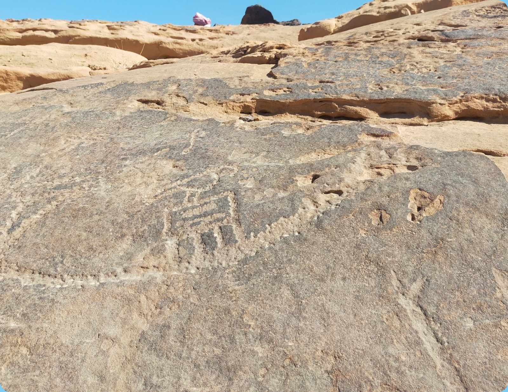
Wadi Omeria
Das Wadi Omeria ist ein Wüstental im südlichen Sinai, bekannt für kürzlich entdeckte alte Inschriften mit dem Horus des Narmer, des ersten Königs der Ersten Dynastie Ägyptens.
Die 2012 von Tallet und Laisney entdeckten Inschriften zeigen frühe pharaonische Bildsprache, die in der trockenen Landschaft des Sinai selten erhalten ist. Die stille Weite und der wandernde Sand des Tals vermitteln ein leises Gefühl tiefer Zeit, in der menschliche Präsenz vor der beständigen Wüste zugleich vergänglich und monumental wirkt.
Im südlichen Sinai; über eine Offroad-Piste mit Geländewagen erreichbar

Wadi Humur
Das Wadi Humur ist ein abgelegenes Tal im südlichen Sinai mit Felsinschriften entlang der nabatäischen Handelsroute, die historische Szenen vom Krieg bis zum Beduinenleben zeigen.
Ein markanter Felsen trägt detaillierte Darstellungen einer Schlacht und einer alten Beduinenhochzeit, ein seltener Einblick in die soziale und militärische Geschichte der Region. Neben diesen Ritzungen spürt man die Stille der Wüste und das Gewicht der Jahrhunderte, die im Stein bewahrt sind.
An der nabatäischen Handelsroute, mit Geländewagen erreichbar

Wadi el Kit
Das Wadi el Kit (vor Ort auch Wadi Kid genannt) ist ein natürliches Wüstental im südlichen Sinai, Ägypten, das sich durch raues metamorphes Gelände in der trockenen Landschaft nahe Dahab und dem umliegenden Hochland schneidet.
Das Wadi gehört zum größeren Netz saisonaler, trockener Flussbetten, die die Topografie des Sinai prägen, mit steilen Felswänden, Schwemmebenen und vereinzelten Quellen, die Beduinenbesiedlung und kleine Flecken Wüstenvegetation ermöglichen. Geologisch durchquert es uraltes präkambrisches Gestein des Arabisch-Nubischen Schildes, und in seinen ruhigeren Abschnitten herrscht eine spürbare Stille, in der Licht und Schatten über Granit und Gneis wandern und das langsame Vergehen der Zeit in dieser dünn besiedelten Region spürbar wird.
Mit Geländewagen und einem kurzen Fußweg erreichbar
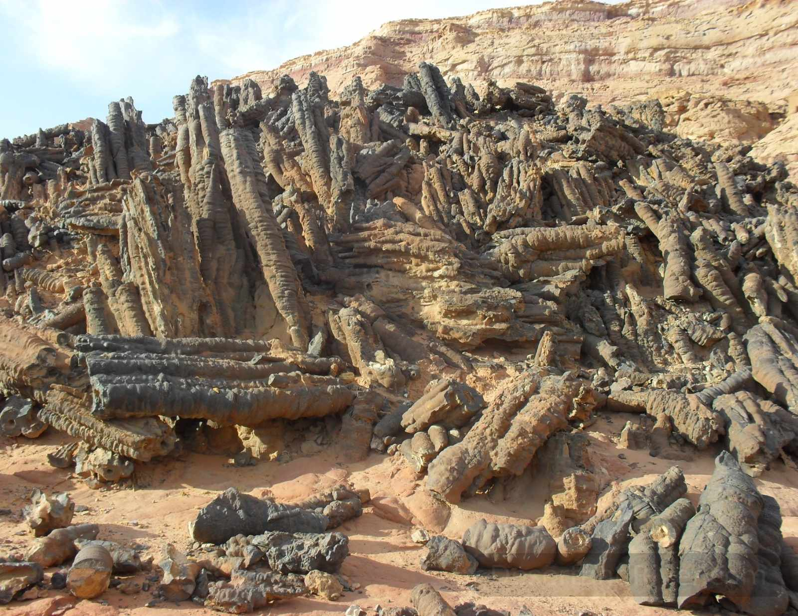
Forest of Pillars
Der Forest of Pillars ist eine abgelegene geologische Formation aus natürlichen, aufrecht stehenden röhrenförmigen Felssäulen auf der Sandebene unterhalb des Tih-Plateaus im Südsinai, Ägypten.
Die Stätte liegt nahe dem Gebel Fuga und ist über Offroad-Pisten landeinwärts von Serabit el-Khadim erreichbar. Sie besteht aus Gruppen eisenoxidreicher Säulen, deren Formen auf einen seltenen Prozess der Mineralausfällung in Wüstensandstein zurückgehen. Die Formationen stehen in starkem Kontrast zu den weiten, windgeformten Ebenen ringsum und vermitteln ein stilles Gefühl geologischer Zeit, in dem Ruhe und Größe in den langen Schatten auf dem Wüstenboden spürbar werden.
Nur mit Geländewagen erreichbar

Wadi Zalaga
Das Wadi Zalaga ist ein weites Wüstental im Südsinai, bekannt für traditionelle Kamelrennen der Beduinen, die das kulturelle Erbe der Stämme lebendig halten.
Das Wadi Zalaga erstreckt sich über eine stille, offene Landschaft, in der sich die Stämme Al-Tarabin und Al-Mazayna jedes Jahr zu Ausdauerrennen über 28–30 km treffen. Die trockene Weite des Tals zeigt sowohl die Härte als auch die Ruhe der Sinai-Wüste und vermittelt ein Gefühl zeitloser Kontinuität im Rhythmus des lokalen Lebens.
Mit Geländewagen erreichbar

Wadi Kharaba
Das Wadi Kharaba ist ein trockenes Tal (Wadi) auf der ägyptischen Sinai-Halbinsel, Teil des feinen Netzes trockener Flussbetten, die bei seltenen Regenfällen zeitweise Wasser führen und die raue Wüstenlandschaft formen.
Das Wadi Kharaba ist ein typisches Beispiel für die steilen, steinigen Rinnen dieser trockenen Halbinsel, über Jahrtausende von Sturzfluten und Winderosion geformt. Seine Konturen und Ablagerungen zeugen still von tiefer geologischer Zeit und klimatischen Gegensätzen und wecken das Gefühl uralter Kräfte, die schweigend am Werk sind.
Nur mit Geländewagen erreichbar; das Gelände ist sehr rau und anspruchsvoll.
Wie wir auswählen, was zusammenpasst
Wir „sammeln“ keine Orte. Wir planen Routen, die Entfernung, Hitze, Gelände, Genehmigungen und die Verfassung der Gäste berücksichtigen. Oft sind die eindrucksvollsten Reisen die mit weniger Stopps und mehr Zeit.
Nächster Schritt
Wählen Sie 5–10 Orte, die Sie wirklich interessieren. Buchen Sie dann ein Gespräch, und wir schlagen eine verantwortungsvolle Route vor.
30-minütiges Gespräch buchen Lesen Sie, wie individuelle Reisen funktionieren